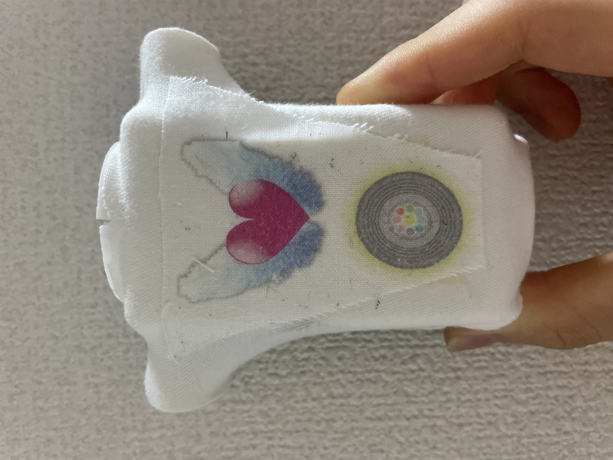
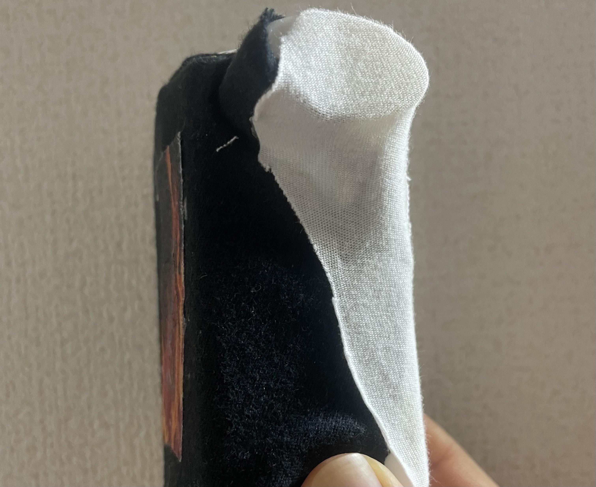
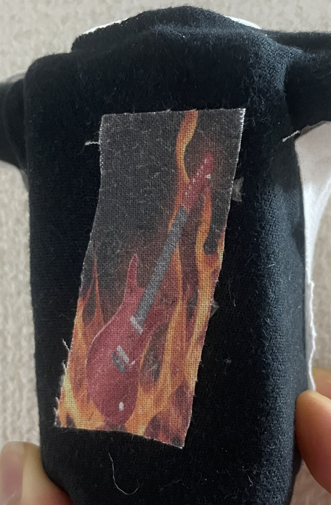

○は具体的にやること
→はやったこと
・■録音するのに必要な機材は？
→音声認識モジュールか、マイクセンサーとEsp32か
→○後者に決定。
・■Esp32とスピーカーにどのように電力を供給するか
○リチウムイオン電池に決定したため、半田ごてを用いて、回路を作る必要あり
→
・○スピーカー、マイクセンサー、回路の制御盤を購入する
→,,,
■機械のデザインとコンセプト
○スケッチに描く
→


■各パーツの素材はどうしよう
○羽は100均で揃うかも、ぬいぐるみ活モノモノのとこにあるかも
■頭部の装飾は3Dプリンタ、腹部はUVプリンタが必要か
■顔面のデザインはどうやって表現しよう
○ UVプリントを使う
■音を通して、しっかりデザインが写る素材を選ばなくてはならない
→ メッシュのポリエステルを採用
■素材のどの部分にデザインを写すのか決めるのが難しい
→カラオケで無料のマイクカバーを発見！、これならプリントする位置を図らなくていい！ 採用
○プリント実行
→イイ感じに写った

■どういう風に録音しよう
○悪魔は思いっきり声を出して狂気を演出、天使は諭すように、包み込むように優しく
→パソコンで実行 これは手ごたえあり 悪魔の方は音割れしまくったけど
■天使の顔は白のしたいが染色には何を使おう
○白のスプレー塗料か、ペンタイプのものにする。ので2つ購入。
→スプレーだと時間かかるしムラもできたので、ペンで塗った。それにUVで目をプリントした。
■デバイスの服の作成
○要らない服を切って使う それにUVした布を縫ってくっつける
→素材は予定通り 布は両面テープで接着



Day7
🔳外側のパーツは完成したので回路を作成
○部品をハンダで繋げる
↓完成した回路

使用したもの
・電池回路・EPS32・マイクモジュール・アンプモジュール・スピーカー
○部品をハンダで繋げる
↓完成した回路
使用したもの
・電池回路・EPS32・マイクモジュール・アンプモジュール・スピーカー
Day8
🔳コードの作成
○Pythonには、特定のキーワードと録音を入れておく。Arduinoは制御版（EPS32）とのやり取りのコードを作る。
🔳録音処理には、Flaskサーバーが必要
○チャットGPTをもとにサーバーの立ち上げをする。
⭐️ Flaskサーバー

○Pythonには、特定のキーワードと録音を入れておく。Arduinoは制御版（EPS32）とのやり取りのコードを作る。
🔳録音処理には、Flaskサーバーが必要
○チャットGPTをもとにサーバーの立ち上げをする。
⭐️ Flaskサーバー
Day9
🔳早速できたコードを試す
→何故か制御版（EPS32）とPythonをネットで繋げようとするとエラー（ループが起こる）
※恐らく電力不足かショートによるもの（ネットの接続は電力を大量に使う）
💦色々試すもEPS32がネットに繋がることはなかった
→何故か制御版（EPS32）とPythonをネットで繋げようとするとエラー（ループが起こる）
※恐らく電力不足かショートによるもの（ネットの接続は電力を大量に使う）
💦色々試すもEPS32がネットに繋がることはなかった
Day10
🔳代替案を考える必要がある（7/12日現在）
○回路全般の役割をスマホに置き換える。→パソコンに特定のワードを言うとスマホでワードに対応した録音が再生される!
🔳スマホとパソコンを繋げる手段んを考える。
→チャットGPTによると、パソコンとスマホを繋げるアプリ（Pushbullet）と自動で録音を流すアプリ（Tasker）が必要らしい。詳しくは↓


. Pushbulletに通知が来るとTaskerで特定の操作が行われる（今回の場合は悪魔の声援.wavを再生）
○回路全般の役割をスマホに置き換える。→パソコンに特定のワードを言うとスマホでワードに対応した録音が再生される!
🔳スマホとパソコンを繋げる手段んを考える。
→チャットGPTによると、パソコンとスマホを繋げるアプリ（Pushbullet）と自動で録音を流すアプリ（Tasker）が必要らしい。詳しくは↓
. Pushbulletに通知が来るとTaskerで特定の操作が行われる（今回の場合は悪魔の声援.wavを再生）